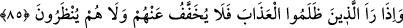

Aslında özür, insanın ‘ben yapmadım veya şunun için yaptım ya da yaptım fakat bir
daha yapmayacağım’ diyerek günahlarını ortadan kaldıracak çareler aramasıdır.
Âyetteki “ (artık)” kelimesi, şuna delâlet etmek içindir: Onlara: “Alçaldıkça alçalın
orada! Bana karşı konuşmayın artık!” (el-Mü’minûn, 23/108) diye hitab edilerek
tamâmen ümitsizlik içinde özür dilemeden bile men olunma ibtilaları, peygamberlerin
şâhidliğiyle uğrayacakları ibtilalardan daha şiddetlidir. Dolayısıyla burada derece ile
ilgili bir terâhî (sonradan olma) ifâde eder.
“Ne de onların özür dilemeleri” rızâ taleb etmeleri “istenir.” Yâni onlara “Rabbinizi
razı edin” denilmez. Onlardan rızayı gerektiren bir şey de taleb edilmez. Çünkü rıza
ancak îman ve sâlih amel ile olur. Âhiret ise amel ve mükellefiyet yurdu değil,
yapılanların karşılığını alma yurdudur. “Dünya âhiretin tarlasıdır.”[182] Toprakta
bozulan, gelişme özelliğini kaybeden ve bitip büyümesi tamamlanmayan her tohum,
hasad edilip de harmana getirildiği zaman normal hali değişikliğe uğradığı için diğer
gelişme sebepleri ona fayda sağlamaz. Ruhlar karaltıların (bedenlerin) arzında
tohumlardır. Onları yetiştiren, bitiren ve meyve verdiren, îman şartıyla amellerdir.
Onları ifsad eden ve bozan normal hallerini değiştiren inkâr ve insanın karakterinden
kaynaklanan amelleridir. Ölüm onların hasadı, kıyâmet de harman yeridir.
Hâfız der ki:
Bir iş edelim, yoksa utanç getirir
Bir gün ki can metâını başka bir cihana çekeriz
85. O zulmedenler azabı gördüklerinde, artık onlardan azap hafifletilmez, onlara
mühlet de verilmez.
“O zulmedenler” kâfirler, zulümleri sebebiyle kendileri için zorunlu hâle getirdikleri
“azabı” cehennem azâbını “gördüklerinde,” bağırıp çağırırlar ve Mâlik’ten azâbın
hafifletilmesini taleb ederler “artık onlardan” cehenneme girdikten sonra bu “azap
hafifletilmez, onlara mühlet de verilmez.” Yâni istirahat için cehenneme girmeden
önce onlara süre verilmez. Azabsız da bırakılmazlar. Kim inkârı ve mizacından
kaynaklanan amelleri, îman ve şer‘î amelleri yerine koyarsa, kötü ahlâkın vebali ondan
hafifletilmez. Kötü ahlâkın değiştirilerek yerine iyi ahlâkın konması için onlara süre de
tanınmaz.